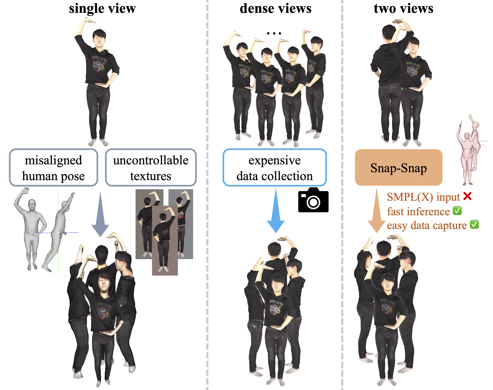
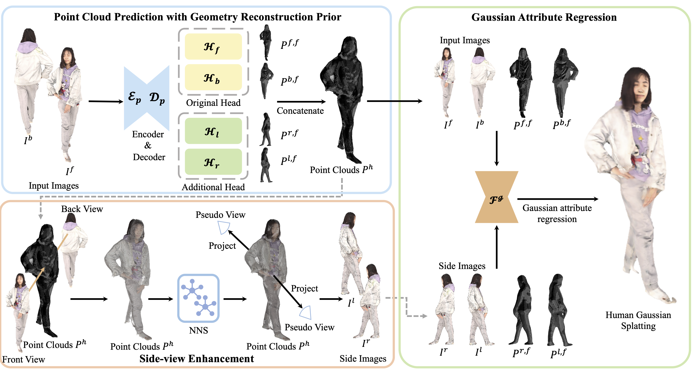

1Huazhong University of Science and Technology 2Huawei Inc. 3Shanghai Jiaotong University
* Equal Contribution
Reconstructing 3D human bodies from sparse views has been an appealing topic, which is crucial to broader the related applications. In this paper, we propose a quite challenging but valuable task to reconstruct the human body from only two images, i.e., the front and back view, which can largely lower the barrier for users to create their own 3D digital humans. The main challenges lie in the difficulty of building 3D consistency and recovering missing information from the highly sparse input. We redesign a geometry reconstruction model based on foundation reconstruction models to predict consistent point clouds even input images have scarce overlaps with extensive human data training. Furthermore, an enhancement algorithm is applied to supplement the missing color information, and then the complete human point clouds with colors can be obtained, which are directly transformed into 3D Gaussians for better rendering quality. Experiments show that our method can reconstruct the entire human in 190 ms on a single NVIDIA RTX 4090, with two images at a resolution of 1024*1024, demonstrating state-of-the-art performance on the THuman2.0 and cross-domain datasets. Additionally, our method can complete human reconstruction even with images captured by low-cost mobile devices, reducing the requirements for data collection.
(a) We design a feed-forward reconstruction framework, which can directly predict 3D human Gaussians from just two images in milliseconds without human prior. (b) We redesign a geometry reconstruction model which can build human point clouds even with highly sparse input, adapting the generalizable geometric prior to the human domain. In addition, a side view enhancement algorithm is proposed to supplement the unseen information. (c) With two-view images at a resolution of 1024*1024, our method can obtain complete human reconstruction results in 190 ms and demonstrates state-of-the-art performance on the THuman2.0 and cross-domain datasets. The method is also shown to perform well on data acquired from low-cost mobile devices.
Without relying on any human-specific priors, Snap-Snap is able to reconstruct high-quality human bodies from only two input views. Even with just two views, our method can recover the complete human body while maintaining accurate alignment with the inputs, especially in clothing details and hair. Our method is trained and evaluated on the THuman2.0 dataset.
To evaluate the reconstruction quality of loose clothing, we select 50 loose clothing examples from Thuman2.1 by calculating the chamfer distance between the SMPL-X mesh and the ground-truth human meshes. Our method directly infers complete geometric information through the point cloud prediction model, achieving good modeling even for loose clothing.
We conduct cross-domain evaluation on the 2K2K dataset with the model trained on THuman2.0 (426 scans). Our method can achieve efficient and high-quality human reconstruction even with fewer input views.
We conduct cross-domain evaluation on the 4D-Dress dataset with the model trained on THuman2.0 (426 scans). Our method can achieve efficient and high-quality human reconstruction even with fewer input views.